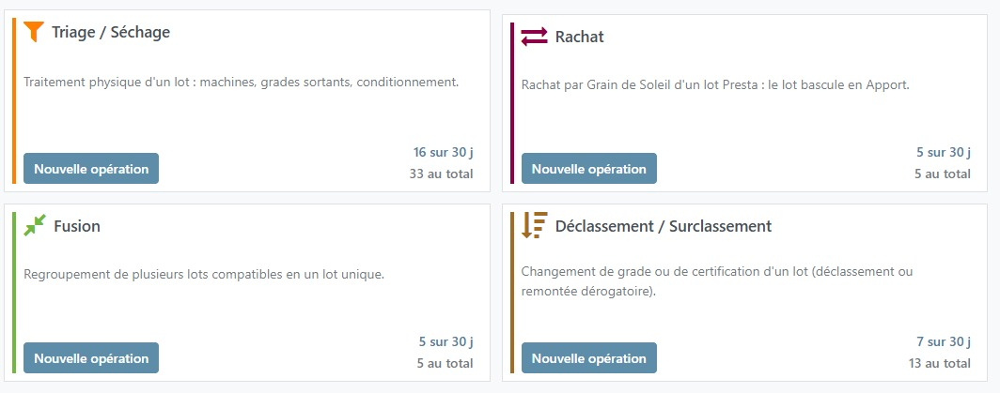
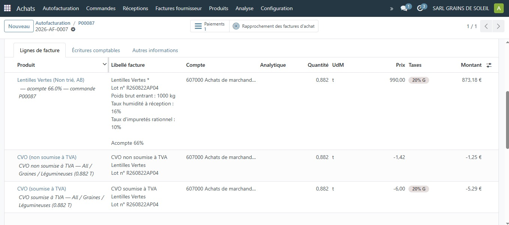
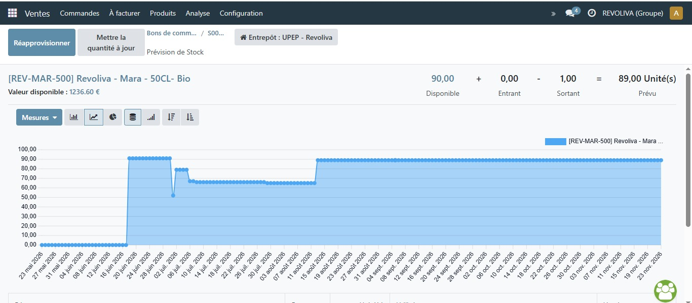
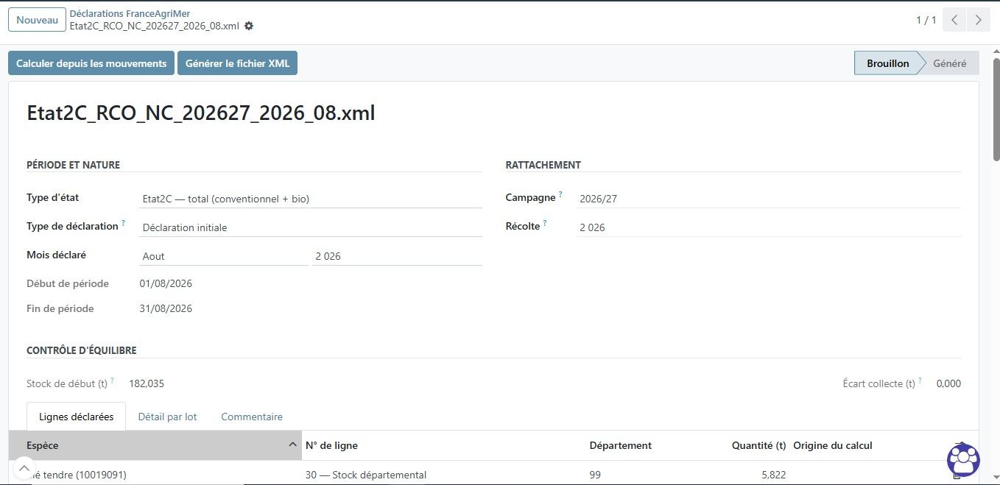
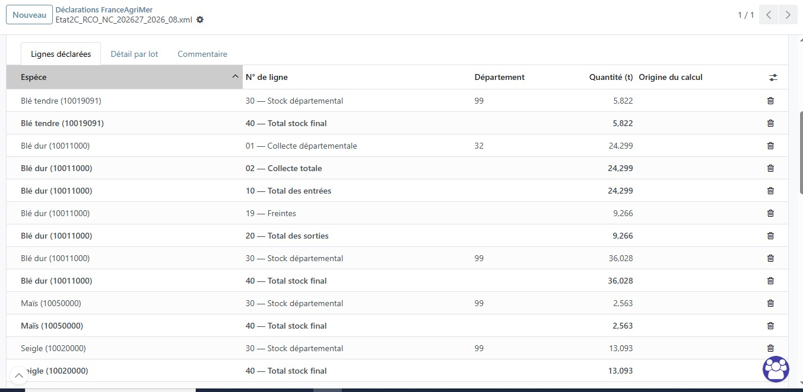

Les fonctionnalités clés du logiciel
MILLØ s'organise en trois modules principaux : achat, vente, déclarations. Cliquez sur les screenshots pour plus de détail.

Achat
- Prestation — service de triage / séchage / ensachage
- Apport — achat de grains à un producteur
- Négoce
- Rationnel (taux d'humidité et d'impureté)
- Fiche de vie
- Bon de réception
- Nettoyage
- Transporteur
- Type de stockage
- Objectifs de tri (en prestation)
Gestion des réceptions de lots mélangés. Ex. : avoine / triticale.
- Triage / Séchage
- Rachat (d'un lot presta en apport)
- Fusion de lot
- Déclassement / Surclassement (en qualité ou en grade)

Agrandir 🔍
- Autofacturation pour achat fournisseur
- Saisie automatique à partir des informations de réception
- Facture d'acompte, de solde et taxe CVO automatiques

Agrandir 🔍Prix de la prestation par machine (saisies lors du triage) et par conditionnement.

Vente
- Un devis précède la réservation
Par ex. : 10 tonnes de lentilles vertes réservées pour l'année mais livrées en parts chaque mois par plus petites commandes.
Stock réservé : permet de visualiser le stock disponible (à vendre) et le stock réservé.

Agrandir 🔍- Conditionnement
- Sélection des lots à livrer
- Impression des bons de livraison
- Sortie de stock
- Conditionnement réel : possibilité de suivre le stock des conditionnements et de les facturer au client
Reprend le prix du devis et de la commande, les conditionnements et services (ensachage, transport, etc.).
Déclaration
La déclaration État 2C (bio + conventionnel) se fait en 1 clic, une fois par mois.
Toutes les entrées et sorties sont des informations connues de l'ERP. Le module déclaration France AgriMer génère un fichier XML que l'on peut importer directement dans l'espace de déclaration FranceAgriMer.

🔍
🔍Consultable en 1 clic.
Informations de déclaration consultables en 1 clic pour une déclaration accélérée : les produits sont agrégés selon les catégories propres à Terres Univia.
Consultable en 1 clic.
Informations de déclaration consultables en 1 clic pour une déclaration accélérée : les produits sont agrégés selon les catégories propres à Intercéréales.
Et bien plus encore
Les autres fonctionnalités essentielles de MILLØ :
- Analyse des ventes, marges brut/net, évolution par catégorie de client et comparaison par période
- Analyse du stock — par catégorie de triage, certification
- Prévision des stocks — en détaillant les stocks réservés (stocks sortant) et les stocks disponibles à l'achat (par ex. stock en ferme en négoce — stock entrant), ainsi que le stock libre en station
- Comptabilité analytique
- Traçabilité totale — de chaque opération, modification et transfert
- Gestion des certifications par producteur × produit × certification × période
- Livraison bloquée si absence de certification
- Facturation électronique depuis MILLØ
- Connexion avec des logiciels de comptabilité (Pennylane)
- Rapprochement bancaire (Quonto, Pennylane)